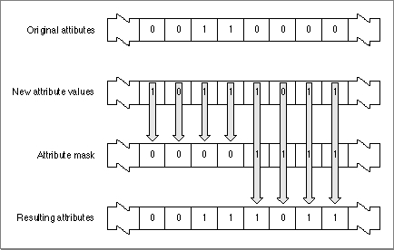

Legacy Document
Important: The information in this document is obsolete and should not be used for new development.
Important: The information in this document is obsolete and should not be used for new development.


Collection Attributes
Each collection item has 32 attributes. Each attribute is represented by one bit flag in the item's attributes property. Therefore each attribute is either set or clear. An item's attributes are stored in a 32-bit long word. The bits are numbered 0 through 31. Bit 31 is the high bit.The upper 16 bits of an item's attributes property represent attributes that are reserved for use by Apple Computer, Inc. Currently, two of these attributes are defined:
The other 14 reserved attribute bits are called the reserved attributes.
- Bit 31 represents the lock attribute. When an item has this attribute set, attempts to replace the item result in an error. When this attribute is clear, you can replace the item.
- Bit 30 represents the persistence attribute. When an item has this attribute set, the Collection Manager includes this item when flattening the collection. When this attribute is clear, the Collection Manager ignores the item when flattening the collection. See "Flattening and Unflattening a Collection" beginning on page 5-37 for more information about flattening collections.
The lower 16 bits of an item's attributes property represent attributes that you can define for purposes suitable to your application. For example, you could use one of these attributes to mark all of the items that you wanted to write to disk and remove from the collection should you need more memory. These 16 attributes are called the user attributes.
Depending on your application, you can set and examine the user attributes individually, or you can set and examine combinations of them. As an example, if your application uses collections that contain four distinct types of items, you could combine two user attributes to provide the four values (0-3) necessary to identify the four types of items.
Every collection object contains default attributes. A collection's default attributes determine the initial attribute values assigned to items added to that collection. For example, you could set the lock and persistence default attributes for a collection. From then on, when you added an item to the collection, the new item would have its lock and persistence attributes set. Of course, you would still be free to edit the attributes for the new item after adding it to the collection.
The Collection Manager provides a mechanism for editing attributes that allows you to set (or clear) the values of some attributes while leaving the values of other attributes alone. To edit attributes, you provide an attribute mask, in which you specify the attributes you want to edit, and new attribute values, in which you specify the new values for the attributes.
Figure 5-3 depicts this editing mechanism.
Figure 5-3 Editing attributes in a collection item

When editing an item's attributes, you provide an attribute mask and new attribute values. For every attribute:
You use this mechanism when editing an item's attributes, when editing a collection's default attributes, when searching for items whose attributes match a certain pattern, when flattening parts of a collection, and when purging items from a collection. For an example, see "Changing the Default Attributes of a Collection" beginning on page 5-15.
- If you set the corresponding bit of the attribute mask to 0, the Collection Manager leaves the attribute unchanged from the original. The new value for the attribute (which you provide in the new attribute values) is ignored.
- If you set the corresponding bit in the attribute mask to 1, the Collection Manager copies the new attribute value you provide for this attribute. The original value of this attribute is overwritten.